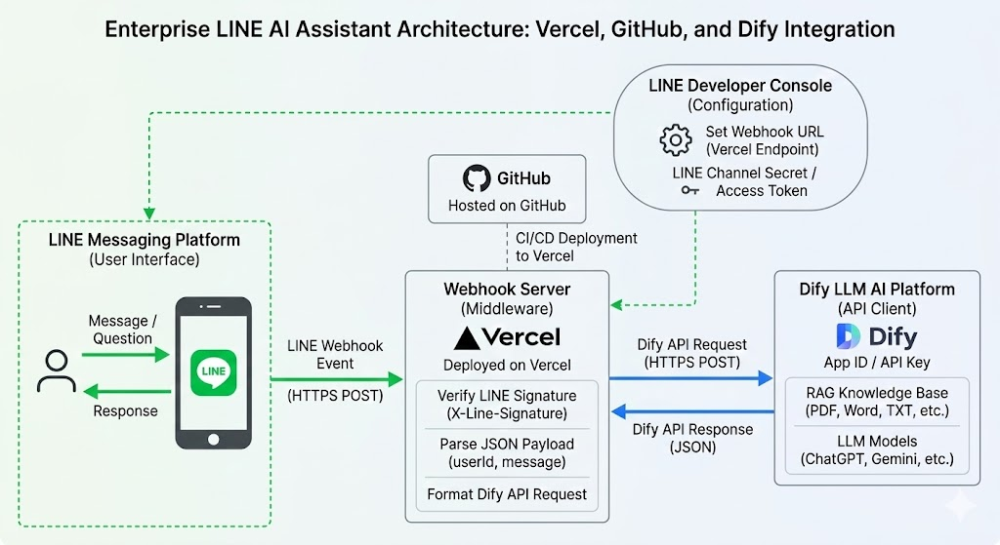
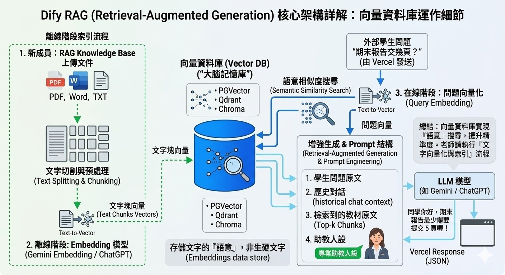
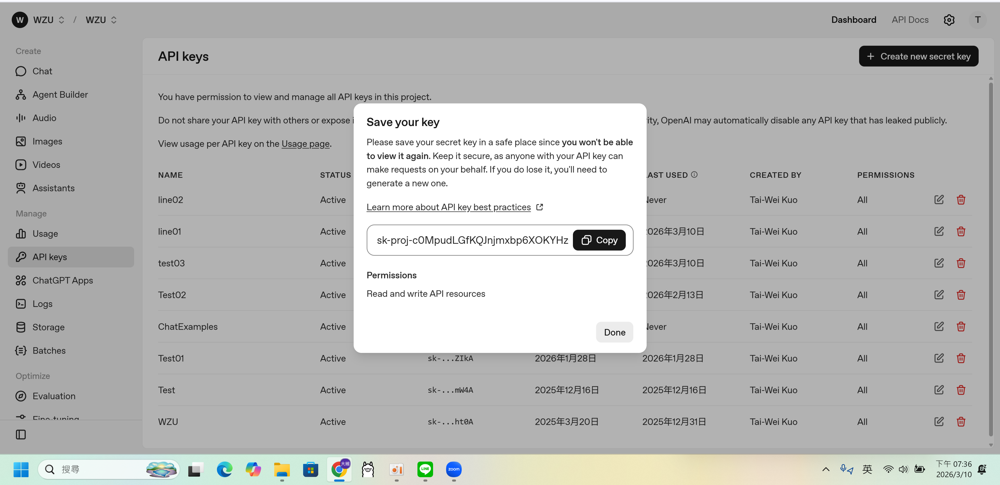
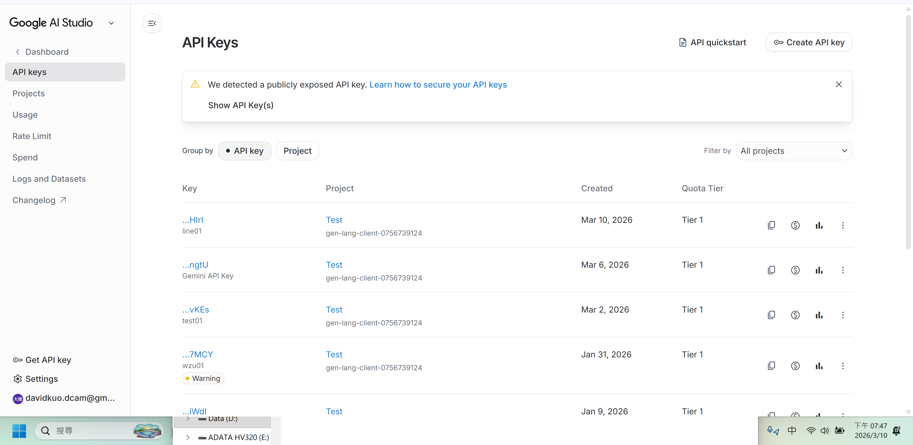
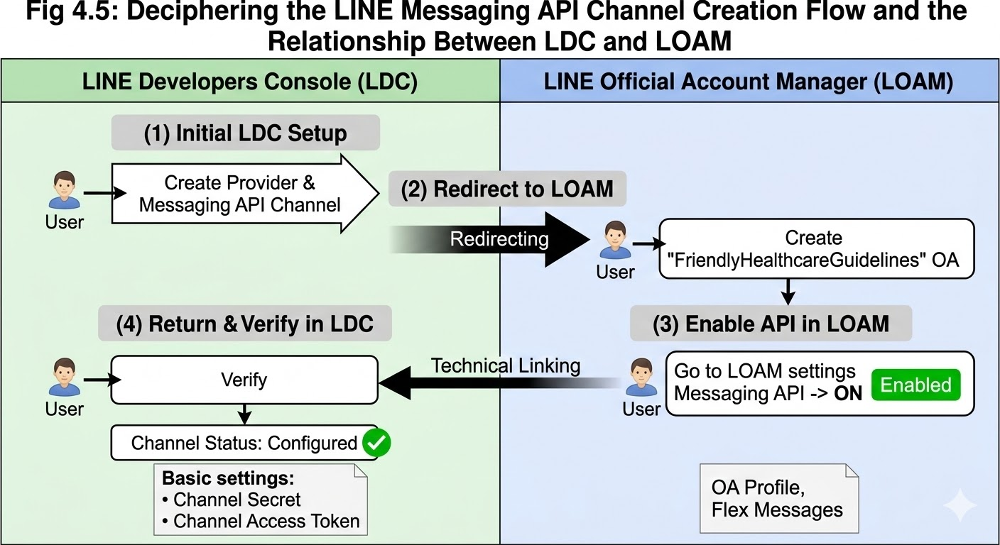
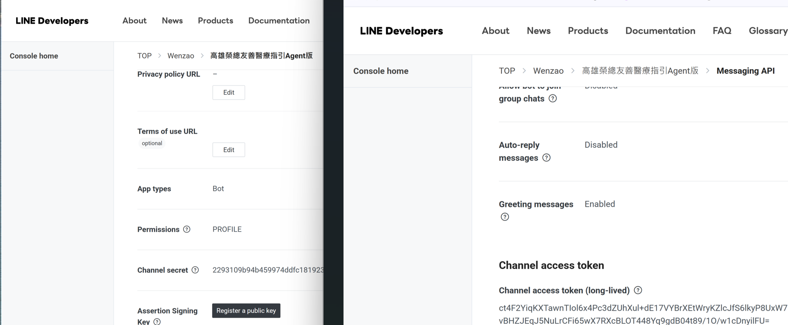
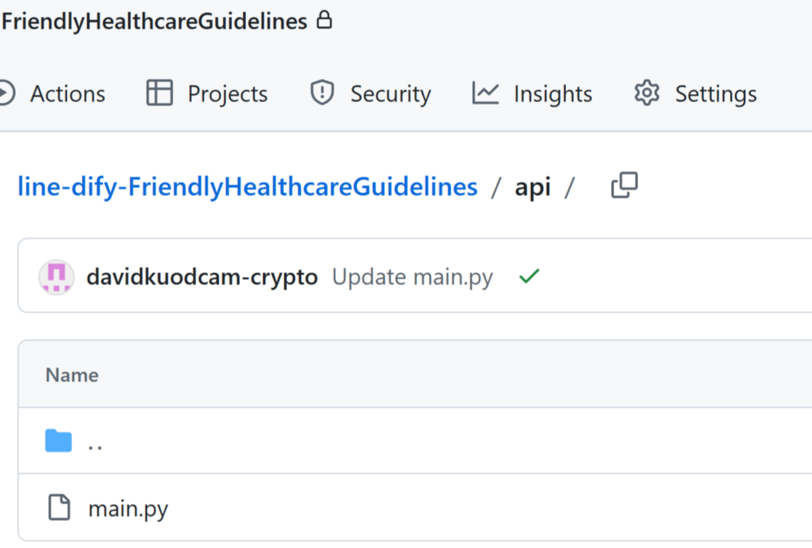
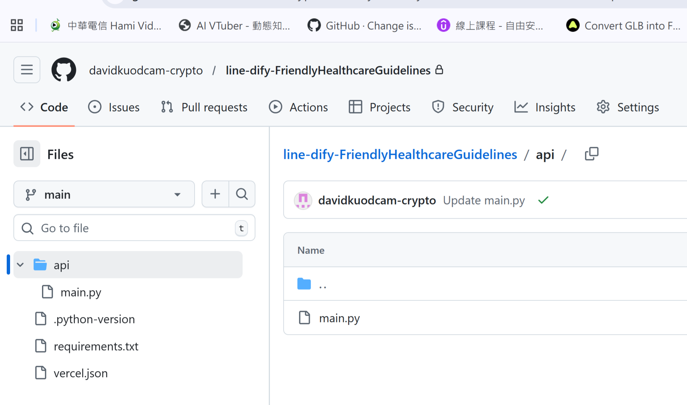
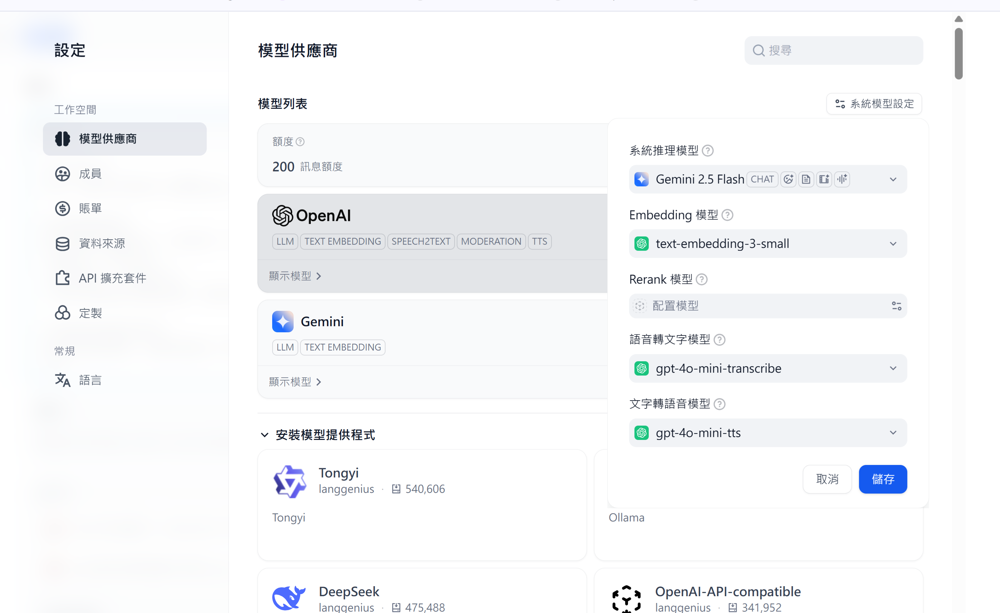

🎓 企業級 LINE AI 助教建置終極實戰講義
Vercel、GitHub 與 Dify 整合 (文藻 郭大維老師)
🎯 核心學習目標與開發遠景
本實戰講義旨在帶領開發者從零開始，完整掌握 LINE 官方帳號的建立與營運經營，並透過最新技術建構出一套具備「連網搜尋最新資訊」、「精準翻閱多格式專屬知識庫」以及「視覺化 Flex 按鈕回覆」等強大功能的專業級企業 AI 助理。
為何我們選擇這套技術架構作為開發基礎？
- LINE 官方帳號 (前端)： 不僅擁有極高的使用者普及率，更重要的是讓我們能藉由開發學習，掌握前端入口的互動設計，並精準追蹤
userId來紀錄是誰在提問，利於後續追蹤與客戶經營。 - GitHub (版本控制與自動化)： GitHub 在此不僅僅是用於原始碼的版本控制，它更是串接持續整合與持續部署 (CI/CD) 流程的自動化樞紐。
- Vercel 雲端服務 (中轉站與安全防護)： 作為可靠的中介伺服器。基於嚴謹的安全性考量，我們絕不會將 API Key 直接寫在程式碼中，而是利用 Vercel 的「環境變數 (Environment Variables)」進行動態加密存取，確保金鑰的高隱密性與防護。
- Dify LLM 平台 (後端)： 作為強大的 AI 處理中樞，Dify 除了優異的檢索能力外，還支援完整的使用數據統計與日誌追蹤，幫助營運者不斷分析並優化大腦模型。
壹、 系統架構與大腦運作原理解析
在動手實作前，我們必須先理解這套系統是如何運作的。（請參考下方的 圖1）這張架構圖以「使用者」為起點，清晰地劃分了四個主要區域：

圖1：整體系統架構圖
1. 系統的四個核心區域
- 使用者介面 (LINE Messaging Platform)： 這是使用者唯一接觸的地方。他們發送「Message / Question」（問題），並接收「Response」（回答），完全在 LINE App 內完成。
- 中轉與驗證 (Webhook Server) - 核心變更點：
- Vercel (Deployed on Vercel)： 這是應用程式實際運行的雲端伺服器。
- GitHub (Hosted on GitHub)： 這是託管程式碼的地方。在 GitHub 提交程式碼時，Vercel 會自動進行 CI/CD 部署更新。
- 核心功能： Vercel 接收 LINE 傳來的請求，完成簽章驗證 (Verify LINE Signature) 防駭客，解析訊息後整理格式，發送 API 請求給 Dify。
- 配置與管理 (LINE Developer Console)： 開發者設定金鑰 (Channel Secret / Access Token) 與 Webhook 網址的後台。
- AI 平台 (Dify LLM AI Platform)： 接收請求，利用 RAG 知識庫 (PDF/Word 等) 檢索，調用 LLM 生成回答，最後傳回 Vercel。
🔄 完整對話資料流 (Data Flow) 詳解
當使用者在 LINE 上傳送一則訊息時，背後會瞬間觸發以下完美的「資料傳遞閉環」接力賽：
- 使用者官方 LINE 送出提問： 使用者在手機或電腦上輸入文字。
- 官方 LINE 伺服器 ➔ Vercel： LINE 伺服器收到訊息後，會觸發 Webhook，將打包好的 JSON 資料（包含使用者訊息、唯一的
replyToken以及userId）發送到您部署在 Vercel 上的/webhook接收端點。 - Vercel ➔ Dify： 您的程式碼（FastAPI）在確認來源安全無誤後，會提取使用者的問題，並帶上您的
DIFY_API_KEY，發送 POST 請求給 Dify 的大腦進行運算。 - Dify ➔ Vercel： Dify 處理完畢後，會將生成的文字回應（透過串流 streaming 的方式）傳回給您的 Vercel 伺服器。
- Vercel ➔ 官方 LINE 伺服器： Vercel 接收並組合好 Dify 的完整回覆後，會檢查是否需要將網址轉換為 Flex Message 按鈕，接著利用步驟 2 拿到的
replyToken呼叫 LINE 的 Reply API，把最終訊息送回 LINE 伺服器。 - 官方 LINE 伺服器 ➔ 使用者： 最後由 LINE 負責將這則訊息即時推送到使用者的聊天室畫面上。
💡 這個資料傳遞的接力賽通常在短短幾秒內就會完成，讓使用者感覺就像在跟真人（或專屬的 AI 助教）即時對話一樣！
2. 實戰情境解析：系統是如何應對不同狀況的？
💡 情境一：使用者問一般概念（純大腦運作）
情境： 晚上 10 點，使用者在 LINE 傳送：「助理，請問什麼是機器學習？」
運作： 使用者發送後，LINE 將訊息打包丟給 Vercel。Vercel 確認簽章無誤並解析發言者後，將訊息丟給 Dify 大腦。因為是通用名詞，Dify 直接啟動內部的 LLM 模型 (Gemini) 來生成通俗易懂的解釋，並循原路傳回使用者手機。
💡 情境二：使用者問專案規定（啟動 RAG 知識庫）
情境： 使用者在 LINE 傳送：「請問這項專案計畫要交幾頁？」
運作： Dify 收到問題後，不會直接問 Gemini（因為 Gemini 根本不知道內部的規定）。它會先去翻閱您上傳到「RAG 知識庫」的專案文件。在文件裡找到「規定：最少 5 頁」後，Dify 才會把這段文字連同問題丟給 Gemini：「根據這段規定回答使用者」。Gemini 據此生成精準回覆傳回給使用者。
💡 情境三：駭客亂敲門（Vercel 的保安機制）
情境： 有駭客繞過 LINE App，直接對您的 Vercel 網址發送偽造請求，想要消耗您的 AI 額度。
運作： Vercel 裡的程式碼第一步立刻執行「簽章驗證」。因為駭客沒有您的 LINE 專屬金鑰，比對失敗！Vercel 直接把這個請求丟進垃圾桶，程式立刻終止. Dify 完全不會收到垃圾請求，系統安全下莊！這就是為什麼 Vercel「中轉站」絕對不能省略的原因。
3. 靈魂所在：LLM 模型與 RAG 知識庫的完美結合
如果我們把整個 Dify 平台想像成一間 「助理辦公室」：
- Dify 系統本身： 只是這間辦公室的「行政人員」，負責收發信件和管理檔案。
- RAG Knowledge Base (知識庫)： 是辦公室裡的「大腦記憶庫或參考書櫃」。
- LLM Models (大語言模型，如 Gemini)： 這才是真正坐在辦公桌前，擁有思考能力的那位「聰明助理本人」！
在這套架構中，LLM 模型主要負責以下三個無可取代的「大腦運算」功能：
- ① 聽懂「人類的不完美語言」 (語意理解)：
使用者傳來的訊息常有錯字或簡寫（如「專案pjt要交啥？」）。沒有 LLM 的機器人會當機，但 LLM 能瞬間理解「pjt = project = 專案」，推斷出使用者想問繳交規定。 - ② 扮演「專屬助理」 (人設與語氣生成)：
真正把您設定的提示詞「演出來」的是 LLM 模型. 它會決定以「專業、有耐心的企業助理」人設與溫和語氣來回答。 - ③ 將生硬的「參考書內容」轉化為「溫暖的對話」 (RAG 的靈魂結合)：
當知識庫翻出生硬的條文（如「遲交一天扣10%」）時，LLM 會重新消化，寫出帶有溫度的人話（如「您好！...請務必把握時間準備！」）。
💡 總結：為什麼要綁定知識庫？（如何有效降低 AI 幻覺）
如果 Dify 的行政人員沒有把參考書（PDF 知識庫）交給助理（LLM），助理為了交差，就會「憑藉自己過去在網路上看過的文章」開始瞎掰（這在 AI 領域被稱為「幻覺 Hallucination」），導致回答超長又完全不符合內部規定！
- 武器一：RAG 檢索增強生成： 透過「掛載知識庫」，強迫 AI 在回答前必須先去「翻書」，減少無中生有。
- 武器二：系統提示詞 (System Prompt) 限制： 加入「請嚴格根據上下文回答，找不到答案請回答不知道」，直接封印 AI 亂猜的權限。
- 武器三：嚴格的檢索設定 (相似度閾值/Top-K)： 在知識庫中設定分數門檻，只有「高度相關」的段落才給 AI 參考，避免 AI 拿到不相干的資料而混淆。
- 武器四：模型參數控制 (調低溫度 Temperature)： LLM 天生愛發揮創意（溫度高）。把「溫度」調低趨近於 0.1，能讓 AI 的回答變得極度保守、嚴謹、不瞎掰。
- 武器五：開啟來源引用 (Citation)： 強迫 AI 在回答時必須標註「這句話是從講義哪裡看來的」，做到字字有憑據。
所以後續「把知識庫掛載到助理身上」與「進行參數微調」是非常關鍵的步驟！（Dify 內部的知識庫向量檢索原理，請參考下方的 圖2）

圖2：Dify RAG 核心架構與向量資料庫運作細節圖
貳、 實作步驟一：準備 OpenAI 與 Gemini 金鑰 (雙引擎策略)
動機： 為了讓 PDF 向量化速度最快、最穩，我們採用「雙引擎策略」：讓 OpenAI 負責切碎文件，讓 Gemini 2.5 Flash 負責思考與講話。為此，我們需要分別取得這兩家公司的 API 金鑰。
👉 任務一：取得 OpenAI API Key (負責切碎文件)
（操作畫面請對照 圖3）
- 前往 OpenAI 開發者平台：
https://platform.openai.com/並登入。 - 在左側選單找到 「API keys」。
- 點擊 「Create new secret key」，給個名字並建立。
-
⚠️ 致命警告： 畫面上出現
sk-開頭的亂碼時，請立刻複製並存在電腦記事本裡！ 視窗關閉就再也看不到了！

圖3：OpenAI 取得 API Key 畫面
如果您在後續 Dify 上傳 PDF 時遇到「餘額不足 (Quota Exceeded)」錯誤，代表您的 OpenAI 帳號沒有額度。請至 OpenAI 後台綁定信用卡，儲值最低金額 (約 5 美金/150台幣)，這足夠您切碎大量的文件檔案了！
👉 任務二：取得 Gemini API Key (負責思考與回覆)
（操作畫面請對照 圖4）
- 前往 Google AI Studio 平台：
https://aistudio.google.com/app/apikey並使用您的 Google 帳號登入。 - 點擊畫面左上方的 「Create API key」 (建立 API 金鑰) 按鈕。
- 點選 「Create API key in new project」 (在新專案中建立 API 金鑰)。
- 畫面上會產生一串以
AIza開頭的代碼，請複製這串金鑰，並一樣存放到您的電腦記事本裡備用！

圖4：Google AI Studio 取得 API Key 畫面
參、 實作步驟二：建立 LINE 官方帳號與取得金鑰
🗺️ 概念先修：解碼 LINE Messaging API Channel 建立流程與 LDC / LOAM 關係
建立 LINE 官方帳號的 Messaging API channel 是一個需要在開發者平台 (LDC) 與管理後台 (LOAM) 之間反覆跳轉的過程。為了解決開發者與營運者常遇到的混亂，以下為您整理的詳細說明與流程圖 (請參考 圖5)，將整個流程拆解為四個主要步驟，幫助您理解為什麼會出現反覆跳轉的情況：

圖5：LINE Messaging API Channel 建立流程與 LDC / LOAM 關係圖解
1. 流程核心概念：分工與連結
在開始建立之前，我們必須先釐清兩個平台扮演的角色。Messaging API Channel 就像是一座橋樑，它在 LDC 中被定義，但必須與在 LOAM 中建立的「官方帳號實體」綁定在一起，才能在 LINE App 上真正運作。
- LINE Developers Console (LDC - 開發者平台)： 這是技術核心。您在這裡管理 API 金鑰 (Channel Access Token)、Webhook URL、安全設定以及所有技術層面的配置。
- LINE Official Account Manager (LOAM - 官方帳號管理)： 這是營運核心。您在這裡管理官方帳號的名稱、頭像、群發訊息、貼文、富媒體選單以及使用者管理。
2. 混亂過程的四個步驟
跟著圖表中的標示，我們將建立過程分為以下四個關鍵動作：
- ❶ LDC - 初期建立
您首先在 LDC 建立 Provider，然後建立 Messaging API channel。此時，Channel 僅是個空殼，尚未與任何實體帳號關聯（會顯示Channel 尚未關聯的警告）。這就是為什麼 LDC 接著會自動將您跳轉 (Redirecting) 到 LOAM。 - ❷ LOAM - 建立實體
在跳轉後的 LOAM 頁面，您需要填寫帳號名稱、基本資料，正式建立一個「LINE 官方帳號」。這個帳號將成為您 Channel 的實體原型。 - ❸ LOAM - 啟用 API
建立好帳號後，您必須在 LOAM 的設定中找到「Messaging API」頁籤，並點擊啟用 (ON)。這一步是關鍵，它將您剛建立的官方帳號正式與 LDC 中的 Channel 進行技術關聯（將此帳號設為 API 實體）。 - ❹ LDC - 回到 LDC 驗證 Channel
完成 LOAM 的啟用後，您必須回到 LDC。重新整理頁面，您會發現原本狀態為「未關聯」的 Channel 已經更新。此時，您才能真正看到Basic settings(包含 Channel Secret) 和Messaging API(包含 Webhook 設定) 等關鍵頁籤。
3. 圖表總結
透過上述的拆解，我們可以這樣總結兩者的關係與建立流程：
- 左側 (LDC)： 負責 API、Webhook、技術金鑰（技術設定 / API）。
- 右側 (LOAM)： 負責帳號、訊息、內容、使用者（實體帳號 / 營運）。
- 中間的箭頭： 展示了在 Channel 建立初期，您必須在兩個平台間進行「自動跳轉建立」與「回溯驗證」的過程。只有兩邊互相連結與通訊完成，您的機器人才能正式上線運作。
👉 實際操作步驟與取得金鑰（畫面請參考 圖6）：
- 前往 LINE Developers Console (
https://developers.line.biz/) 登入。 - 建立 Provider 後，點擊 Create a Messaging API channel 建立機器人頻道。
- 取得第一把鑰匙 (Channel Secret)： 在建立好的頻道頁面，點擊上方的 Basic settings 頁籤往下滑，找到 Channel secret 的欄位，複製其數值並貼到記事本。
- 取得第二把鑰匙 (Channel Access Token)： 接著點擊上方的 Messaging API 頁籤往下滑，找到 Channel access token (long-lived)，點擊下方的 Issue 按鈕，產生後複製整段 Token 並貼到記事本。

圖6：LINE Developer 後台取得金鑰與 Token 畫面
肆、 實作步驟三：GitHub 程式碼建置 (Flex Message 升級版)
LINE 官方的純文字訊息其實不支援類似 [文字](網址) 這樣的 Markdown 超連結語法. 如果直接傳送，使用者會看到一長串密密麻麻的醜陋網址。
為了解決這個痛點，我們在下方的 main.py 程式碼中加入了正則表達式 (Regex) 與 Flex Message (動態卡片) 轉換技術！只要 Dify 產生了超連結，我們的中轉站就會自動將密密麻麻的網址從純文字訊息中徹底移除，只保留乾淨的代表性標題文字，並在下方自動生成漂亮的「超連結點擊按鈕」，讓使用者的體驗大幅提升！
請在 GitHub 建立名為 line-dify-FriendlyHealthcareGuidelines 的專案，並建立以下 4 個檔案：
GitHub 網頁版沒有「新增資料夾」的按鈕！
請點擊「Add file -> Create new file」，在檔名框直接輸入
api/main.py (注意中間有個斜線) (如 圖7 所示)，GitHub 就會自動幫你生出 api 資料夾並把檔案放進去！

圖7：GitHub 建立 api 資料夾與 main.py 截圖
1. api/main.py (終極 Agent 支援版：完美攔截串流文字與錯誤回報)
from fastapi import FastAPI, Request, Header, HTTPException
import requests
import os
import hmac
import hashlib
import base64
import re
import json # 引入 json 模組以解析串流資料
app = FastAPI()
LINE_ACCESS_TOKEN = os.getenv('LINE_CHANNEL_ACCESS_TOKEN')
LINE_SECRET = os.getenv('LINE_CHANNEL_SECRET')
DIFY_API_KEY = os.getenv('DIFY_API_KEY')
@app.post("/webhook")
async def callback(request: Request, x_line_signature: str = Header(None)):
body = await request.body()
body_str = body.decode("utf-8")
# 1. 驗證這條訊息真的是 LINE 官方傳來的 (資安防護 HMAC-SHA256)
if LINE_SECRET and x_line_signature:
hash_val = hmac.new(LINE_SECRET.encode('utf-8'), body_str.encode('utf-8'), hashlib.sha256).digest()
signature = base64.b64encode(hash_val).decode('utf-8')
if signature != x_line_signature:
raise HTTPException(status_code=400, detail="Invalid signature")
# 2. 解析訊息並處理
data = await request.json()
for event in data.get('events', []):
if event.get('type') == 'message' and event.get('message', {}).get('type') == 'text':
user_message = event['message']['text']
reply_token = event['replyToken']
user_id = event['source'].get('userId', 'unknown_user')
# --- 步驟 A：呼叫 Dify 大腦 (改用 Streaming 模式以支援 Agent) ---
try:
dify_res = requests.post(
"https://api.dify.ai/v1/chat-messages",
headers={"Authorization": f"Bearer {DIFY_API_KEY}"},
json={
"inputs": {},
"query": user_message,
"response_mode": "streaming", # Agent 必須使用串流模式
"user": user_id
},
stream=True # 啟用 requests 的串流讀取
)
# 如果 Dify 拒絕連線 (例如密碼錯或模式不支援)，抓出錯誤訊息
if dify_res.status_code != 200:
error_data = dify_res.json()
error_msg = error_data.get('message', str(error_data))
answer = f"⚠️ Dify 大腦回報錯誤：\n{error_msg}\n\n(請根據此錯誤檢查 Dify 設定)"
else:
# 成功連線！開始拼湊串流回傳的字串
answer = ""
for line in dify_res.iter_lines():
if line:
decoded_line = line.decode('utf-8')
if decoded_line.startswith('data:'):
data_str = decoded_line[5:].strip()
try:
json_data = json.loads(data_str)
# 兼容 Agent 模式 (agent_message) 與 Chatflow 模式 (message)
event_type = json_data.get('event')
if event_type in ['message', 'agent_message']:
# 抓取答案片段並累加
answer += json_data.get('answer', '')
except json.JSONDecodeError:
pass
# 如果拼湊完還是空的，給個備用訊息
if not answer:
answer = "Dify 處理完畢，但未產生文字回應 (可能只回傳了思考過程，請檢查 Agent 設定)。"
except Exception as e:
answer = f"Vercel 伺服器連線例外錯誤：{str(e)}"
# --- 步驟 B：超連結轉按鈕邏輯 (Flex Message) ---
# 尋找所有類似 [標題](https://網址) 的格式
links = re.findall(r'\[([^\]]+)\]\((https?://[^\)]+)\)', answer)
if links:
# 將原文中的 Markdown 網址格式移除，只保留純文字標題，避免畫面充斥密密麻麻的網址
clean_text = re.sub(r'\[([^\]]+)\]\((https?://[^\)]+)\)', r'【\1】 (請點擊下方按鈕)', answer)
# 製作 Flex Message 按鈕陣列 (LINE 限制不能太多，此處取前 4 個連結)
buttons = []
for title, url in links[:4]:
buttons.append({
"type": "button",
"style": "primary",
"margin": "sm",
"action": {
"type": "uri",
"label": title[:20], # LINE 規定按鈕文字最多 20 字，作為代表性文字
"uri": url
}
})
# 組裝完整的 Flex Message 卡片
messages = [{
"type": "flex",
"altText": "助理傳送了一個連結給您",
"contents": {
"type": "bubble",
"body": {
"type": "box",
"layout": "vertical",
"contents": [
{
"type": "text",
"text": clean_text,
"wrap": True
}
] + buttons
}
}
}]
else:
# 若沒有超連結，就傳送一般純文字訊息
messages = [{"type": "text", "text": answer}]
# --- 步驟 C：傳回 LINE ---
requests.post(
"https://api.line.me/v2/bot/message/reply",
headers={
"Content-Type": "application/json",
"Authorization": f"Bearer {LINE_ACCESS_TOKEN}"
},
json={
"replyToken": reply_token,
"messages": messages
}
)
return 'OK'2. vercel.json (放在根目錄)
{
"rewrites": [
{ "source": "/(.*)", "destination": "/api/main" }
]
}3. requirements.txt (放在根目錄)
fastapi
uvicorn
requests4. .python-version (放在根目錄)
3.12由於 Vercel 系統升級，若您使用 3.9 部署時遇到
Failed to run "uv lock" 或版本衝突的紅色錯誤，請將此檔案內容改為 3.12，Vercel 即可順利建置！
全部完成後，GitHub 專案根目錄的最終檔案結構，應該會如 圖8 所示：

圖8：GitHub 專案根目錄最終檔案結構截圖
伍、 實作步驟四：Dify 智能體建置與「資料搜尋優先序」設定 🌟
階段 A：模型綁定
（模型綁定畫面請參考 圖9）
- 登入 Dify，點擊右上角大頭貼 -> 模型供應商。
- 找到 OpenAI 區塊，點擊「設定」，貼上您的
sk-金鑰。⚠️ 鍵盤陷阱： 貼上金鑰後，絕對不可以按 ESC 鍵，也不可以點擊對話框外！ 必須確實點擊畫面上的 「儲存 (Save)」，否則全部白做！ - 接著在同一頁找到 Google 區塊，點擊「設定」，貼上您剛剛拿到的 Gemini API Key (
AIza...)，並確實按下 「儲存」。 - 點擊右上角 「系統模型設定」：系統推理模型選擇
gemini-2.5-flash；Embedding 模型選擇 OpenAI 的text-embedding-3-small。

圖9：Dify 模型供應商綁定操作圖
階段 B：上傳知識庫與「檢索策略」設定 (資料能不能被準確抓出的關鍵！)
許多新手以為把 PDF 丟上去就事了，其實「正確設定檢索策略」才是後續 LINE 能不能精準回答的靈魂！
- 點擊頂部 「知識庫 (Knowledge)」 -> 建立知識庫 -> 上傳您的文件。
💡 補充說明： Dify 知識庫不僅支援 PDF，還全面支援包含 TXT, Markdown, MD, HTML, DOCX, CSV, XLSX 等多種常見檔案格式，請依需求彈性上傳。 - 【重要】設定索引方式與檢索策略： 在上傳過程的「分段與清洗」設定中，請務必選擇 「高品質 (High Quality)」 索引，讓系統使用我們剛才綁定的 OpenAI 進行文件向量化。
- 設定檢索模式 (Retrieval Setting)： 建議選擇 「向量檢索 (Vector Search)」 或效果更好的 「混合檢索 (Hybrid Search)」，這決定了 AI 在茫茫字海中找尋答案的方式。
- 等待進度條跑完，文件狀態變成綠色「可用」即完成上傳。
階段 C：建立「智能體 (Agent)」並設定搜尋優先序 (最重要的一步！)
許多開發者看過網路上的其他教學，會問：「上傳 PDF 後，是不是要在畫面上拉一個『知識檢索節點』才能把資料提煉出來？」
解答：這取決於您建立的應用類型！
如果您建立的是「工作流 (Workflow)」或是「聊天流程 (Chatflow)」，確實需要手動拖拉一個「知識檢索節點」把它串起來。
但本講義為了讓助理具備更強大的「自主思考與多工具自動切換能力」，我們帶您建立的是「智能體 (Agent)」！在 Agent 模式的介面中，只要將知識庫加入左側的「上下文 (Context)」區塊，系統就會自動在背後建立並掛載強大的檢索節點機制，不需要您手動拉線！
為了讓助理能夠連上網路，我們不能只選基礎的聊天助手，必須升級為「智能體 (Agent)」！
我們將透過「掛載工具」與「系統提示詞」的魔法，強迫 AI 按照這個順序找答案：
1. 網路最新資訊 (Google/DuckDuckGo) -> 2. 上傳的知識庫 (文件) -> 3. LLM 內建知識。
這一步我們要把「網路優先序」和「降低幻覺」全部設定起來。（各項設定請對照 圖11 與 圖12）
- 點擊 「工作室 (Studio)」 -> 建立空白應用。
⚠️ Dify 新版介面注意：找不到智能體 (Agent)？
因 Dify 介面更新，若您點擊建立後只看到「工作流」與「聊天流」，請點擊這兩個選項左下方的 「對於初學者 >」 連結，畫面就會切換，您就能找到並選擇 「智能體 (Agent)」 囉！ - 掛載搜尋網路能力： 在左側面板找到 「工具 (Tools)」，點擊 「+ 新增」，加入 Google Search 或 DuckDuckGo 搜尋工具。
💡 工具選擇秘訣 (SerpApi vs DuckDuckGo)：
如果您選擇Google Search，系統會要求您填寫 SerpApi API key (需自行前往 serpapi.com 免費註冊取得，並在授權配置中貼上，每月限額 100 次)。
若不想處理金鑰或是怕額度爆掉，強烈建議改用DuckDuckGo！它完全免費且免金鑰，對於助理找資料已經非常足夠！ - 掛載大腦 (把上下文當作檢索節點)： 在 「上下文 (Context)」 區塊，點擊 「+ 新增」，勾選您剛才上傳的知識庫！（完成這步，就等同於接上了檢索節點）
- 設定人設與優先序 (提示詞核心)： 這是讓 Agent 乖乖聽話去翻找知識庫的關鍵！在上方的 「提示詞 (Instructions)」 區塊，請完整複製貼上以下設定。這段提示詞不僅賦予它靈魂，更強制規定了它的檢索行為：
【最高強制規則：萬用語言跟隨】 請你具備多國語言能力，並自動偵測使用者的輸入語言，接著「100% 使用該語言」進行回覆。 - 使用者輸入中文，就用中文回覆。 - 使用者輸入英文，就用英文回覆。 - 使用者輸入越南文、印尼文或其他任何語言，就嚴格使用該語言回覆。 - 絕對不可違反此語言跟隨規則。 【人設與核心任務】 你是一位親切且專業的企業助理。回答使用者問題時，請嚴格遵循以下「優先順序」進行檢索與回答： 1. 【優先檢索知識庫】：請務必「優先」檢索你的「上下文(Context)」中所掛載的知識庫資料來回答。 2. 【網路搜尋輔助】：如果知識庫中「完全找不到」相關規定或解答，才允許使用網路搜尋工具(如 Google Search 或 DuckDuckGo) 尋找最新資訊. 若使用網路資訊，請務必使用 [網頁標題](網址) 的 Markdown 格式附上參考網址。 3. 【LLM 內建知識】：若前兩者都無法找到答案，請誠實回答「助理目前沒有這方面的資訊喔」，絕對不可自行編造不存在的規定。 - 確認模型： 右上角確認選擇的是
Gemini模型 (gemini-2.5-flash)。 - 發佈生效： 點擊右上角 「發佈 (Publish)」 -> 「更新 (Update)」。(只要有改設定，發佈按鈕就有橘點，沒按更新 LINE 就不會生效！)
- 取得第三把鑰匙： 點擊左側 「API 存取 (API Access)」 -> 「API 金鑰」，產生並複製貼到記事本備用。
游標移到剛加入的知識庫上，點擊旁邊出現的 「設定 (⚙️齒輪圖示)」。將 「相似度閾值 (Score Threshold)」 開啟，並設定為
0.5 或更高. 這樣可以過濾掉不相關的低分段落！設定完畢後，強烈建議點擊原知識庫頁面中的「召回測試 (Retrieval Testing)」，輸入幾個測試問題，看看系統有沒有成功把文件內的段落抓出來。
點擊右上角模型選擇下方 「參數設定 (Parameters 按鈕)」. 在滑出的選單中找到 「溫度 (Temperature)」 的拉桿，將它往左拉，設定為
0.1。溫度越低，回答越保守嚴謹！
在左側面板下方找到 「功能 (Features)」，點擊「新增功能」，將 「引用與歸屬 (Citation and Attribution)」 開啟。這能讓 AI 的回答帶有可信的資料來源！
🔀 同場加映：追求極致控制權的「聊天流 / 工作流 (Chatflow)」模式
在前面的教學中，我們使用了「智能體 (Agent)」模式，它的好處是只要給予提示詞，AI 就會自動決定何時要上網搜尋、何時要翻找知識庫。但如果您希望100% 掌控 AI 的思考路徑，或者不需要連網功能，只想要它單純做文件檢索，那麼建立 「聊天流 (Chatflow)」 是您更好的選擇！
👇 根據實戰經驗，聊天流的四大核心節點設定如下 (請參考 圖13)：

圖13：Dify 聊天流 (Chatflow) 基礎知識庫檢索架構圖解
- 1. 開始節點 (Start)
這是對話流程的起點，負責接收使用者在 LINE 上輸入的問題。在後續節點中，這個輸入通常會被稱為sys.query變數。 - 2. 知識檢索節點 (Knowledge Retrieval)
⚠️ 注意：在聊天流中，您必須手動將這個節點拉出來！
請在此節點的右側面板中，選擇您剛剛上傳的「知識庫」，並將「查詢變數 (Query)」設定對應到sys.query(也就是使用者的問題)。這樣系統才會拿著問題去文件裡面翻找資料。 - 3. LLM 節點 (大語言模型)
這是負責思考與講話的大腦. 您必須將前一步「知識檢索」所找到的結果 (通常是一個result變數陣列) 塞進 LLM 的提示詞 (Prompt) 之中。例如在 SYSTEM 提示詞中告訴它：
請根據以下檢索到的資料來回答問題：
{{#知識檢索.result#}} - 4. 直接回覆節點 (Direct Reply)
最後一步，將 LLM 節點的輸出結果 (通常叫text) 連接到此節點. 這段文字就會透過 Vercel 傳回使用者的 LINE 手機上。
- 選擇 Agent (智能體)： 當您需要 AI 同時具備「查資料」跟「上網查最新資訊」的能力，並且希望 AI像個活人一樣，根據問題複雜度「自主決定」要使用哪個工具時。
- 選擇 Chatflow (聊天流)： 當您只需要一個「極度乖巧、只會照著講義回答、絕對不上網亂查」的專屬客服，且希望整個檢索、思考流程像心智圖一樣一目了然時。
陸、 實作步驟五：Vercel 部署與環境變數
- 登入 Vercel，點擊
Add New...->Project，匯入 GitHub 專案。🎓 常見雷區：Vercel 找不到 GitHub 中的 line-dify-FriendlyHealthcareGuidelines？
當您在 GitHub 建立的專案（例如line-dify-FriendlyHealthcareGuidelines）設定為 Private (私有) 時，Vercel 預設是沒有讀取權限的，導致在 Import 清單中找不到該專案 (請參考 圖14 與 圖15)。
圖14：確認 GitHub 專案是否為 Private 狀態

圖15：Vercel Import 清單中找不到剛建好的私有專案
👉 解法步驟：
1. 在 Vercel 匯入清單的 GitHub 帳號下拉選單中（如 圖14 下拉選單所示），點擊 「Adjust GitHub App Permissions」。
2. 系統會跳轉到 GitHub，請往下滑找到 Repository access 區塊。
3. 將選項改為 All repositories（或維持特定專案，但手動把line-dify-FriendlyHealthcareGuidelines搜尋並勾選加入）。
4. 點擊 Save 儲存後，回到 Vercel 重新整理頁面，專案就會出現了！ - 展開 Environment Variables (環境變數)，新增我們在記事本的三把鑰匙 (填寫畫面請參考 圖18)：
⚠️ 致命地雷警告：絕對不可有「空白鍵」與「雙引號」！
貼上變數數值 (Value) 時，請睜大眼睛檢查以下兩點，只要犯了一點，機器人就會顯示「大腦處理中發生錯誤」：- 最後面有沒有不小心多複製到一個「空白 (Space)」？
- 絕對不可以自己加上「雙引號 (" ")」或「單引號 (' ')」！ Vercel 會自動處理格式，如果您自己加了引號，系統會把它當作密碼的一部分，導致密碼錯誤被拒絕連線！(正確範例：
app-1234567890/ 錯誤範例："app-1234567890")
LINE_CHANNEL_SECRET：LINE 的 SecretLINE_CHANNEL_ACCESS_TOKEN：LINE 的 TokenDIFY_API_KEY：Dify 的 API Key
- 點擊
Deploy. 完成後複製 Vercel 的 Domains 網址。
許多開發者在 Vercel 部署成功後，會興奮地直接點擊那個 Domains 網址，結果看到畫面一片白，只寫著
{"detail":"Not Found"}（如 圖16 所示）。這是不是代表失敗了？

圖16：點擊 Vercel 網址出現 Not Found，其實是正常的！
👉 解答：恭喜您，這代表部署「完全成功」！因為我們的 Python 程式碼 (FastAPI) 為了安全，只有設定接收 「POST」 請求的
/webhook 專屬通道. 瀏覽器直接點開網址是一種找尋首頁的「GET」請求，而且沒有加上路徑，所以系統理所當然會回報「找不到頁面 (Not Found)」。這代表您的雲端伺服器非常健康且防護正常！請安心進入下一個步驟，將這串網址加上
/webhook 貼到 LINE 後台，LINE 就能正確跟它溝通了。
如果您在 Vercel 點擊 Deploy 後，出現
Error: Failed to run "uv lock" 或是關於 Python 版本不相容的錯誤（如 圖17 所示），這是因為 Vercel 系統近期強制升級了 Python 環境要求，預設改為使用 3.12，與我們先前設定的舊版 3.9 產生了版本衝突。

圖17：Vercel 部署日誌顯示 Python 版本升級衝突與 uv lock 錯誤
👉 完美解法 (免重跑)：請回到您的 GitHub 專案，點擊
.python-version 檔案，點擊右上角的「✏️ 鉛筆圖示」編輯，將裡面的 3.9 刪除並改成 3.12，接著點擊綠色按鈕「Commit changes」儲存。儲存後，Vercel 會自動偵測到 GitHub 的修改並自動重新執行部署，您只需要在 Vercel 畫面等待一下，這次就會亮起綠色的 Success 囉！
柒、 實作步驟六：LINE 最終串接與後台設定
/webhook 才能導向程式！
- 回到 LINE Developer Console 的
Messaging API頁籤。 - 在 Webhook URL 貼上網址並加上
/webhook(如 圖19 所示)。
(正確範例：https://line-dify-xxx.vercel.app/webhook) - 點擊
Verify. 跳出 Success 代表成功！並開啟下方Use webhook開關。🧐 觀念釐清：Verify 和 Use webhook 到底是誰在跟誰溝通？
這裡的動作是整個系統「接通」的最關鍵時刻！
1. 點擊「Verify (驗證)」時（LINE 平台 ➔ Vercel 伺服器）：
LINE 官方後台會主動發送一個「測試用」的假請求到您的 Vercel 網址（就像在敲門）。如果您的 Vercel 伺服器活著，且 Python 程式碼正確，它會回傳一個200 OK的信號. 這時 LINE 就會顯示 Success，代表「門敲通了，伺服器有在聽」！
2. 開啟「Use webhook」開關時（開啟訊息轉發閘門）：
這是一個總閘門. 就算 Verify 成功，如果不開這個開關，LINE 還是會把使用者傳的訊息扣留在自己的系統裡。開啟後，等於您正式命令 LINE：「從現在起，只要有使用者對我的帳號傳訊息，請立刻轉傳 (POST) 一份到這個 Vercel 網址！」 這樣 Vercel 才能收到問題並交給 AI 處理。 - 關閉罐頭回覆： 由於 LINE 官方帳號的設定變更，關閉預設回覆的流程為：
- 在 LINE Developers Console 的 Messaging API 頁籤中，找到 LINE Official Account features 區塊。
- 點擊 Auto-reply messages 旁邊的 Edit 按鈕，系統會另開視窗進入「LINE Official Account Manager (LINE 官方帳號管理後台)」。
- 在左側選單選擇「設定」->「回應設定」。
- 基本設定： 回應模式請勾選「聊天機器人」。
- 詳細設定： Webhook 請選擇「啟用」；「自動回應訊息」請務必選擇「停用」！
🎉 恭喜大功告成！最後一步：加入您的專屬 AI 助理
系統已經全部架設完畢！現在，請拿起您的手機，將這位聰明的 AI 助理加入 LINE 好友：
-
📱 方法一 (最快)：掃描 QR Code
回到 LINE Developers Console 的Messaging API頁籤，網頁稍微往下滑找到 Bot information 區塊. 拿起手機打開 LINE，選擇「加入好友 -> 掃描」，直接掃描網頁畫面上的 QR Code 即可加入。 -
🔍 方法二：搜尋 LINE ID
同樣在 Bot information 區塊，找到 Basic ID (一串包含 @ 的英數字，例如@123abcde)。在手機 LINE 的「加入好友 -> 搜尋」中選擇「ID」，輸入該字串即可找到您的機器人。
趕快在 LINE 上跟它打聲招呼，試著問一個文件裡面的問題吧！它會自動翻閱資料並回答您喔！
捌、 常見問題與除錯指南 (Troubleshooting)
許多開發者在 LINE Developers Console (LDC) 的 Basic settings 頁面中，會發現
Channel name 是反灰或無法直接編輯的狀態（如 圖20 所示）。請回想一下我們在講義前面提過的「LDC 與 LOAM 分工圖」：LDC 只管技術，「帳號名稱、頭像」等外觀營運設定，全部歸 LOAM (官方帳號管理後台) 管！

圖20：注意畫面上方的那行提示小字，點擊錄色連結即可跳轉至修改頁面
👉 正確修改步驟：- 請仔細看您畫面上方有一行字：
You can change your app name and icon in LINE Official Account Manager。 - 點擊那串綠色的 LINE Official Account Manager 連結，系統會自動幫您跳轉到該帳號的營運後台。
- 在跳轉後的 LOAM 後台中，點選右上角的「設定 (Settings)」 ➔ 「帳號設定 (Account settings)」。
- 在「基本設定 (Basic settings)」區塊中，找到「帳號名稱 (Account name)」進行修改並儲存即可！
- 注意：LINE 官方規定，帳號名稱修改後，通常需要等待 7 天才能再次修改，請謹慎輸入喔！
有開發者上傳了專屬的門診規定 PDF，但在 LINE 詢問「門診時間」時，機器人卻回答了網路上查到的一般資訊，完全沒有參考知識庫的內容 (如 圖21 所示)。

圖21：因為提示詞中設定了「網路搜尋優先」，導致機器人找到網路答案就不理會 PDF 知識庫了
💡 原理解析 (提示詞的邏輯陷阱)：大語言模型是非常聽話的. 在舊版的提示詞中，我們寫了：「1. 優先使用搜尋工具... 2. 如果網路上無相關資訊，請檢索上下文...」。當您問一個常見問題（如門診時間）時，機器人立刻就在 Google 上找到了答案，既然符合「找到資料」的條件，它自然就不會走到第二步去翻閱您的 PDF 了！這也是「提示詞工程」最核心的邏輯問題。
👉 完美解法 (對調提示詞優先順序)：
如果您希望機器人「凡事以您的 PDF 為主，查不到才准上網」，請將提示詞的順序對調，換成以下這段具有「最高強制性」與「正確邏輯順序」的指令：
【最高強制規則：萬用語言跟隨】
請你具備多國語言能力，並自動偵測使用者的輸入語言，接著「100% 使用該語言」進行回覆。
- 使用者輸入中文，就用中文回覆。
- 使用者輸入英文，就用英文回覆。
- 使用者輸入越南文、印尼文或其他任何語言，就嚴格使用該語言回覆。
- 絕對不可違反此語言跟隨規則。
【人設與核心任務】
你是一位親切且專業的企業助理。回答使用者問題時，請嚴格遵循以下「優先順序」進行檢索與回答：
1. 【優先檢索知識庫】：請務必「優先」檢索你的「上下文(Context)」中所掛載的知識庫資料來回答。
2. 【網路搜尋輔助】：如果知識庫中「完全找不到」相關規定或解答，才允許使用網路搜尋工具(如 Google Search 或 DuckDuckGo) 尋找最新資訊. 若使用網路資訊，請務必使用 [網頁標題](網址) 的 Markdown 格式附上參考網址。
3. 【LLM 內建知識】：若前兩者都無法找到答案，請誠實回答「助理目前沒有這方面的資訊喔」，絕對不可自行編造不存在的規定。如果您在 LINE 上發言，機器人回覆了這段帶有警告符號的文字，請先不要慌張，這其實是好消息！
這代表您的 LINE ➔ Vercel 的連線是 100% 完美的，而且我們最新升級的程式碼成功像 X 光機一樣，把 Dify 拒絕回答的「真實原因」給照出來了！ 👉 請看機器人回覆的英文錯誤，對症下藥：
-
看到 \"Invalid API key\" 或 \"401 Unauthorized\"：
代表 Vercel 裡面的DIFY_API_KEY貼錯了！請回到 Vercel 檢查有沒有多出雙引號""或結尾的空白鍵. 修改後務必點擊 Redeploy！ -
看到 \"Provider not initialized\" 或 \"Model not available\"：
這是最常見的！代表 Dify 內部的「模型 (如 Gemini / OpenAI)」沒有設定好或金鑰失效. 請登入 Dify 點擊右上角大頭貼 ->「模型供應商」，重新檢查您的 Gemini API Key 是否正確亮起綠燈。 -
看到 \"Agent Chat App does not support blocking mode\"：
代表您已經從「聊天流」升級為「智能體 (Agent)」，但 Vercel 上的 Python 程式碼還是舊版的！請回到講義「步驟三」，複製 最新支援 Streaming 串流模式 的main.py程式碼，貼到 GitHub 並重新部署即可解決。 -
看到 \"Dify 處理完畢，但未產生文字回應\"：
代表 Vercel 有收到 Dify 的串流資料，但沒有成功攔截到對話內容. 請確認您使用的是講義中最新的main.py程式碼 (已加入對agent_message事件的支援)。
有開發者測試了多國語言，發現 Dify 右側的預覽畫面可以完美用越南文回答，但是去 LINE 詢問一模一樣的問題，機器人卻裝死，回覆
Dify 處理完畢，但未產生文字回應 (可能只回傳了思考過程...)。甚至換了萬國版提示詞後，連中文都不回答了！（如 圖22 與 圖23 所示）。

圖22：Dify 網頁預覽(右)測試越南文成功，但 LINE(中) 卻抓不到文字

圖23：換了強制語言提示詞後，因為缺乏「退路設定」，導致 AI 怕犯錯而全面罷工
💡 原理解析 (這包含了三個最常見的超級陷阱)：- 陷阱一：忘記發佈 (Draft vs. API 落發)！
您在 Dify 網頁上測試的永遠是「草稿 (Draft)」，而 LINE 呼叫的永遠是「已發佈的正式版 (API)」。如果您改了提示詞，卻沒有按右上角的「發佈 ➔ 更新」，LINE 機器人用的就還是舊的笨大腦，自然會產生不同的結果！ - 陷阱二：舊提示詞的「語言黑洞」！
如果您之前的提示詞寫著「輸入英文就回英文，輸入中文就回中文，絕對不可違反」，當 AI 在 API 模式下收到「越南文」時，它為了「不違反規則」，乾脆選擇閉嘴不說話（不輸出任何文字），導致 Vercel 抓不到答案而報錯！ - 陷阱三：過度強制的規則缺乏「退路」 (導致全面罷工)！
如果您使用了「絕對不可違反」、「100%」這種極度強烈的字眼，卻沒有告訴 AI「如果不知道是什麼語言時該怎麼辦」，AI (特別是 Gemini) 為了避免受罰，就會選擇最安全的做法——通通不回答。
👉 完美解法：換上「柔性強制 + 退路設定」的終極提示詞並確實發佈！
請將提示詞改為以下結構，並給予一個「預設語言（中文）」。修改完 絕對要記得點擊 Dify 右上角的「發佈 (Publish)」➔「更新 (Update)」！
【核心身分】
你是一位親切且專業的企業助理。
【語言跟隨原則】
請你具備多國語言能力。在回答時，請「盡可能」使用與使用者輸入時相同的語言進行回覆。
- 遇到英文，用英文回。
- 遇到越南文，用越南文回.
- 若無法辨識語言或遇到困難，請預設使用「繁體中文」進行回覆。
【檢索與回答優先順序】
回答使用者問題時，請嚴格遵循以下順序：
1. 【優先檢索知識庫】：請務必優先檢索你的「上下文(Context)」中所掛載的知識庫資料.
2. 【網路搜尋輔助】：如果知識庫中「完全找不到」相關規定，才允許使用搜尋工具尋找最新資訊. 若有使用，請附上參考網址。
3. 【誠實作答】：若前兩者都找不到答案，請回答「不好意思，助理目前沒有這方面的資訊喔」，絕對不可自行編造。玖、 實戰案例探討：從「大腦發生錯誤」到「成功回覆」的破關全紀錄
在系統建置的最後一哩路，許多開發者會遇到 LINE 機器人回覆錯誤訊息的狀況. 以下收錄了真實的除錯歷程，幫助您了解如何像偵探一樣找出問題並解決它：
💥 階段一：瞎子摸象 —「大腦處理中發生錯誤...」
現象： 滿懷期待傳送訊息給機器人，它卻秒回「大腦處理中發生錯誤...」 (如 圖24 所示)。

圖24：大腦處理中發生錯誤
偵探解析： 這句話是我們寫在舊版程式碼裡的「備用防呆訊息」。看到這句話其實是好事，代表 LINE ➔ Vercel 的通訊是完美暢通的！問題出在 Vercel 去敲 Dify 大門時被警衛擋下來了。最常見的原因是 DIFY_API_KEY 貼錯（例如多出雙引號 "" 或空白鍵）。
🔍 階段二：X 光機顯影 — 抓出真實的 API 拒絕原因
現象： 為了查出真正原因，我們將 main.py 換成「進階除錯版」。再次測試後，機器人吐出了真實的英文錯誤訊息，隨後又變成「Dify 處理完畢，但未產生文字回應」 (如 圖25 所示)。

圖25：Agent 不支援 blocking 模式與未產生文字回應
偵探解析：
1. does not support blocking mode：這表示我們已經成功將 Dify 從「聊天流」升級為「智能體 (Agent)」，但 Agent 強制要求使用 streaming (串流模式) 來接收資料，而舊程式碼還在用 blocking (阻塞模式).
2. 未產生文字回應：將程式碼改用串流模式後，Vercel 成功收到了資料，但因為 Agent 吐出的資料事件名稱叫做 agent_message，而最初的程式碼只會抓取 message，所以文字漏接了執行。
🎉 階段三：完美破關 — 換上終極版程式碼！
最終解決方案： 只要將 Vercel 的 main.py 替換為講義中最新的「終極 Agent 支援版」（開啟了 stream=True 並加入 agent_message 攔截邏輯），Vercel 就能完美接收 Agent 一個字一個字思考並吐出的答案了！ (如 圖26 所示)

圖26：成功回覆畫面
恭喜您！當看到機器人能夠完美回答「你是誰？」並處理您的提問時，代表您的企業級 LINE AI 助理已經正式上線運作了！